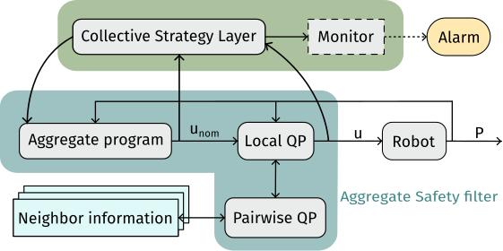

@ ACSOS 2026 · PhD Symposium
Towards Collective Robotic Operating Systems
Aggregate Computing for adaptive robot swarms


The engineering problem
A swarm keeps changing while it operates
A robotic collective must pursue a system-level goal with only local views and no centralized point of coordination.
Robots are heterogeneous: they move, fail, join, and leave
Connectivity and sensing change at runtime
Unsafe transients can cause physical damage
The collective needs runtime support, not only a coordination algorithm.

Programming abstraction
One program for the whole collective
Usually, each robot is programmed individually — a common example is ROS. With hundreds of robots, that does not scale.
With Aggregate Computing the collective is programmed as a whole, and the same program runs decentralized on every device, which repeatedly:
- senses local information;
- exchanges data with its neighbors;
- runs the same aggregate program;
- acts on its local result.
Local executions compose into a global behavior.

One program, distributed execution, collective outcome
Investigated services — 1 of 3
Organising the collective in space


Investigated services — 3 of 3
A safety filter between collective strategy and actuation

Aggregate program
Computes the nominal swarm command unom
CLF/CBF safety filter
Refines it into a feasible command u before actuation

Scope: proof-of-concept simulations; quantitative scalability and overhead remain future work. Collective strategy and physical safety stay separate concerns.